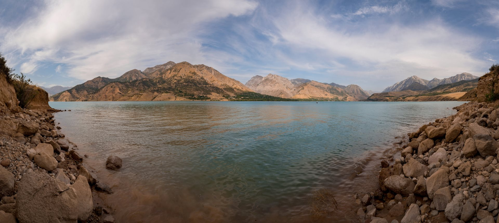

Water Knowledge Hub
Suvni o‘rganish O‘zbekistondan boshlanadi
Suv Ufqi — O‘zbekistondagi suv xo‘jaligi, muhandislik va ta’limga oid manbalarni jamlovchi olti tilli o‘quv portali.
Bo‘limlarni o‘rganing
Loyihaning maqsadi
Irrigatsiya, suvni tejash va gidrotexnika bo‘yicha O‘zbekiston tajribasini o‘rganishni osonlashtiramiz. Portalda TIQXMMI yangiliklari, infratuzilma loyihalari va suv xo‘jaligiga oid qarorlar bir joyda jamlangan.
Talabalar, o‘qituvchilar va sohaga qiziquvchilar qisqa sharhlardan boshlashi, mavzuni chuqurroq o‘rganish uchun esa asl manbalarga o‘tishi mumkin.